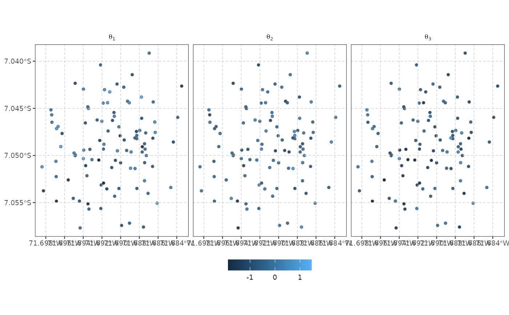
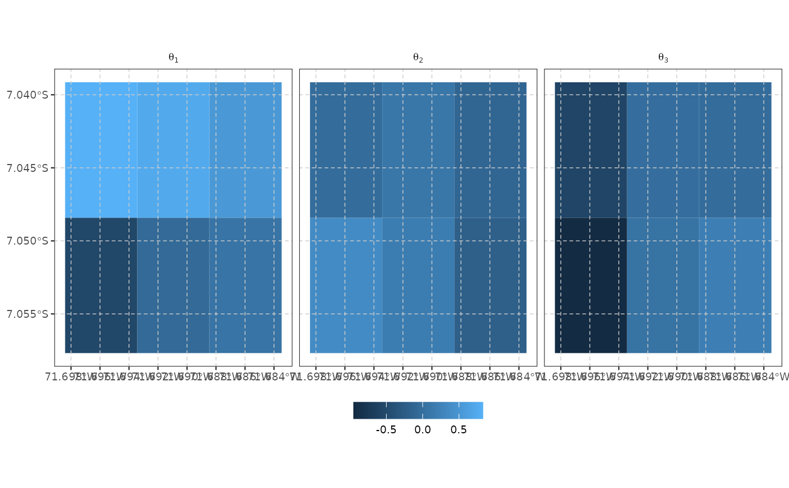
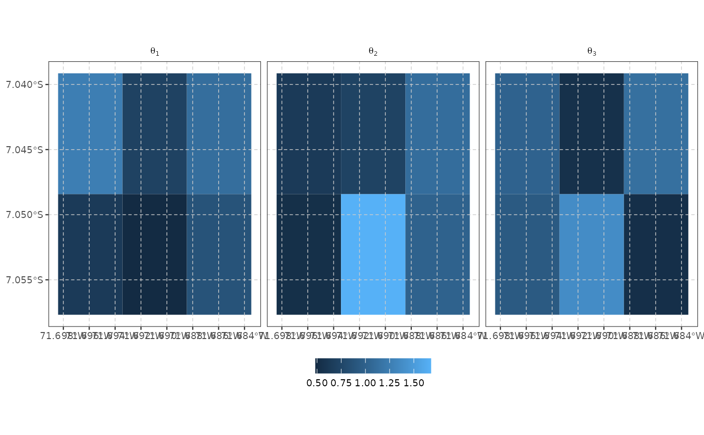
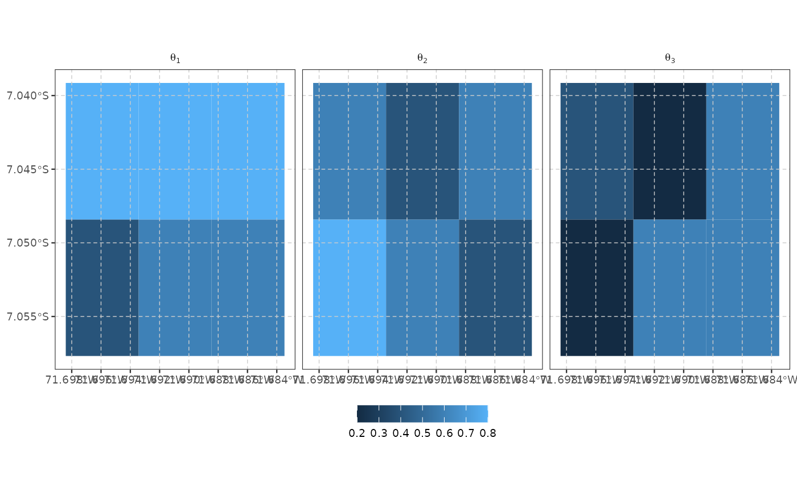

Maps a posterior summary of each latent factor (stat: the
posterior mean by default, or any other function of the draws) at the
locations pred was predicted at. Draws points if those locations
are points (e.g. the observed households), or a filled polygon map if
they are polygons (e.g. a prediction grid).
Usage
plot_predict(
pred,
grid = NULL,
select = NULL,
stat = mean,
boundary = NULL,
facet_scales = "fixed",
ncol = NULL,
...
)Arguments
- pred
A
draws_arrayas returned bypredict.spifafor a spatial model.- grid
An
sf/sfcobject of the locationspredwas predicted at (points or polygons), in the same row order aspred's locations. Defaults toattr(pred, "newdata"), attached automatically bypredict.spifa; only needed explicitly if that attribute is missing.- select
Factors to plot: an integer vector of factor indices, or
NULL(default) for all.- stat
A function of one numeric vector (the draws at one location/factor) returning a single number – e.g.
mean(the default),sd,median, orfunction(v) mean(v > 1)for an exceedance probability.- boundary
Optional
sf/sfcpolygon(s) drawn as an outline (e.g. the prediction area) on top of the map; has no effect on the computed/plotted values.- facet_scales
The
scalesargument offacet_wrap.- ncol
Number of columns in the facet grid; default lets
facet_wrapchoose.- ...
Currently unused.
Value
A ggplot object with a clean map theme already applied
(no axis titles, light dashed reference grid, small bottom legend). A
fill (polygons) or colour (points) scale can be added as usual; a
theme/theme_*() added afterwards overrides
it as normal.
Details
pred is computed once via predict.spifa and can be
reused across multiple plot_predict() calls – e.g. different
stat/select values – without calling predict()
again, which is normally the expensive step.
Examples
# \donttest{
library(sf)
#> Linking to GEOS 3.12.1, GDAL 3.8.4, PROJ 9.4.0; sf_use_s2() is TRUE
data(ipixuna)
nitems <- ncol(ipixuna$items)
nfactors <- 3
A <- matrix(1, nitems, nfactors)
A[c(4, 8), 1] <- 0
A[c(2, 4, 5, 6, 7, 8, 10), 2] <- 0
A[c(5, 6), 3] <- 0
samples <- spifa(items ~ 1, data = ipixuna, nfactors = nfactors, niter = 5,
constraints = list(discrimination = A))
# at the observed household locations (points)
pred <- predict(samples)
plot_predict(pred)

# on a grid (polygons); predict() takes the cell centroids for the
# spatial kernel but keeps the polygons for plot_predict() to map
grid <- st_sf(geometry = st_make_grid(ipixuna, n = c(3, 2)))
pred_grid <- predict(samples, newdata = grid)
plot_predict(pred_grid)

plot_predict(pred_grid, stat = sd)

plot_predict(pred_grid, stat = function (v) mean(v > 0)) # exceedance

# }